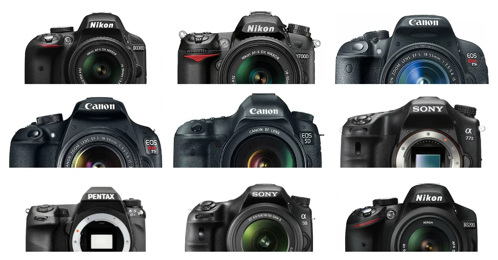
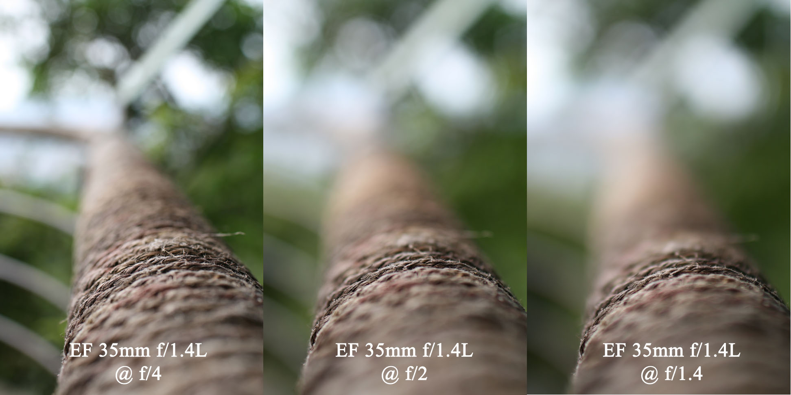
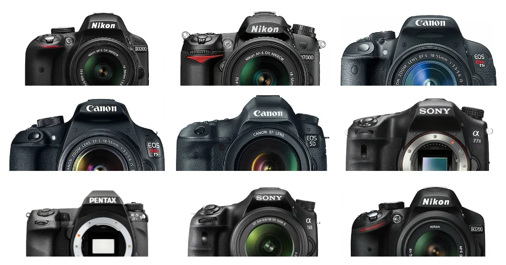
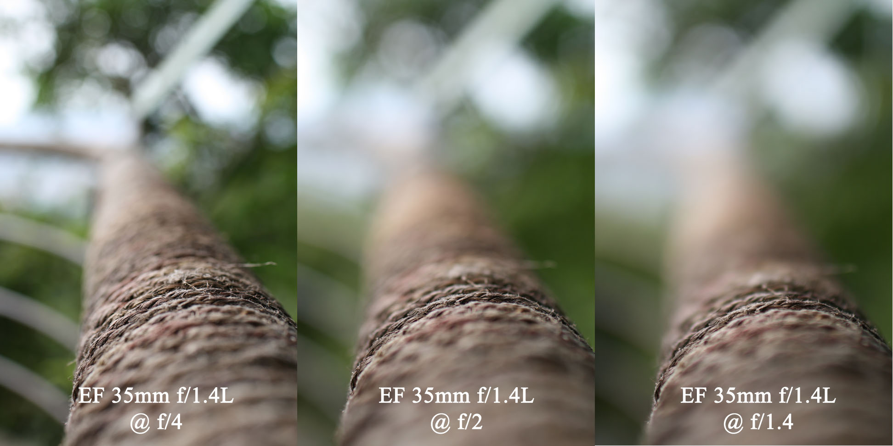

A fénykép(ező) titkai
Egy mély ugrás a fényképezés világába
Hogy más szemmel lásd a világot..
Üdvözlet a fényképezés varázslatos világában! Az emberiség történetének egyik
legkifinomultabb és
legmegragadóbb művészeti formájával ismerkedhetsz most meg. Ezen az oldalon lehetőséged van egy
átfogó
képet ;) szerezni arról, hogy mit rejt a
fényképezés sokszínű univerzuma. Olvashatsz a fényképezés történelméről, fotós technikákról,
különböző kamerafajtákról, népszerű típusokról és mindezen felül még nyereményben is
részesülhetsz.
Fedezd fel a világot egy új perspektívából!

 



Ugorj bele az következő témákba egy kattintással:
A fényképezés története
Történeti összefoglaló arról, hogy hogyan jutott el ez a művészet a kezdetektől a mai állapotáig.
Fényképezés alapszabályai
A legfontosabb szabályok, amiket ha betartasz, sokat dobnak majd a fotóidon.
Népszerű típusok
A legnépszerűbb típusok manapság, amelyekkel biztosan nem lősz mellé, ha első gépet keresel magadnak!
1: ez relatív lehet..